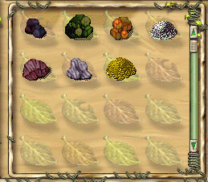

|
因為童話的資源非常多，加上工作技能無法一人全部包辦 ... 所以必須要靠大家一起幫忙站長才能把這個網站弄得更出色 ^^
站長需要募集的資料有三方面 :
1. 文章的整理 : 在網頁選項的 童話資料 - 文章整理篇，目前是站長把一些自己覺得很不錯的文章截取過來，
並加上標題以方便各位閱讀，所以如果有看到好的文章或是自己寫的願意放到站上給大家欣賞，請寄信給我，我會把它放到網站上的。
2. 技能小圖 : 在網頁選項的童話資料 - 工作技能篇，有看到圖片吧 = = 那些圖片目前都是 天之子、伶伶、風無痕 一格一格地把他
在遊戲中按下傳說中的 Print Screeen 給剪下來的，雖然說站長可以跟官方要到資料，不過在圖片排版比較下 ... 我選擇用這種麻煩的方式 @@ ~ 所以希望各位高手基本技能師跟進階技能師，
能把各個等級的小圖抓下來寄信給我。
3. 幻獸圖鑑 : 在網頁選項的童話資料 - 幻獸圖鑑篇，很抱歉這邊只有圖鑑尚未整理 ... 等幻獸百科用好到時就用做連結到圖鑑區就好了 @@，到時保證不會那麼亂嚕 ... 不過言歸正傳，
幻獸圖鑑的圖也是需要運氣比站長好 10000 倍的大大們提供，請點一下遊戲右上方的書然後點進去幻獸圖鑑，點選幻獸圖後抓下圖寄給站長，這樣就 ok 了，如果不會壓縮寄原圖也可以，會壓縮的話麻煩是壓成 .gif 檔 ( 不過最好還是直接寄 .bmp 啦，最清楚 )，
雖然會比較大一點不過圖比較不會失真，站長希望可愛的圖鑑不要因為一點點檔案的大小而用破壞性壓縮 ( .jpg ) 然後變的看起來有點破破的 ~ 還有本站用的圖鑑是 " 已吃下去的圖 " 不是打到卡片還沒放進圖鑑裡的圖喔，所以這邊請善心人士稍稍注意一下 ~
4. 生活點滴圖 : 看到幾張搞笑的圖了嗎 ( 站長覺得自己的 非禮女精靈 真是精典 XD ) 如果在遊戲中碰到什麼有趣的事或是看到什麼有趣的畫面也希望
寄信給站長，站長會寫上你的 ID 跟對這張圖的說明，所謂獨樂樂不如眾樂樂，希望大家能多多提供跟支持囉 ~ * bow !! 以下是範例圖示教學
|
 | 左邊圖示就是風無痕抓下的圖，首先一格只要擺一個原料或產品就好，然後依然等級順序排好，按下Print Screen再寄信給站長，
就大功告成啦，一個小小的提醒，遊戲的手指遊標不要移到圖上喔 ...
|
站長信箱 : 489521731@s89.tku.edu.tw
|